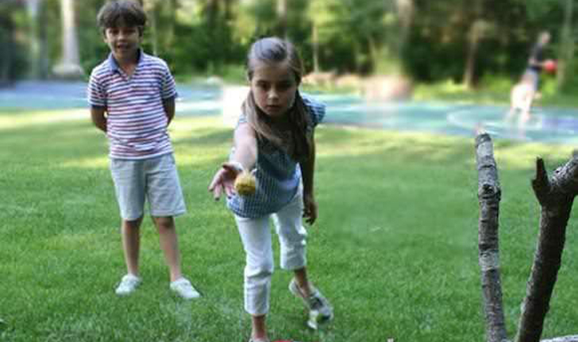

种子爱心活动概括
2010年6月1日"关注孤儿，呼唤爱——中国品牌童装爱心之旅"更名为"关注儿童，呼唤爱"。"关注儿童，呼唤爱"是由中国品牌童装网主办，中国品牌服装网和时尚126商城承办，于2007年11月1日起开展的，一次大规模、大范围、众多品牌企业联手参与，以改善全国57.3万贫困儿童的生活和学习条件，让贫困儿童健康快乐成长的大型慈善爱心活动
活动以"你捐衣服，我送广告"的方式开展。并以此为基点，开展了"为孤儿压岁，广告因爱心更具价值"、"捐衣送暖、共抗雪灾"、"请把衣物捐给他们"四川地震灾区、玉树地震灾区捐赠等相关续写活动。
截止到2013年10月西藏、江西、贵州、四川、湖南、广东、湖北、山东、甘肃、河南、内蒙古等省市自治区6000多名儿童得到衣服捐献，总捐献价值
